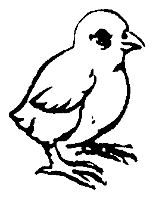
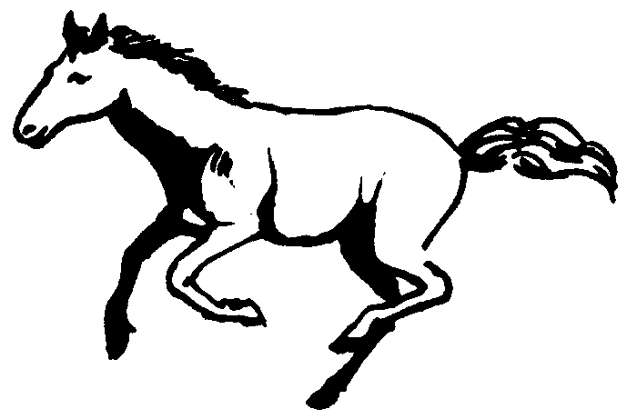
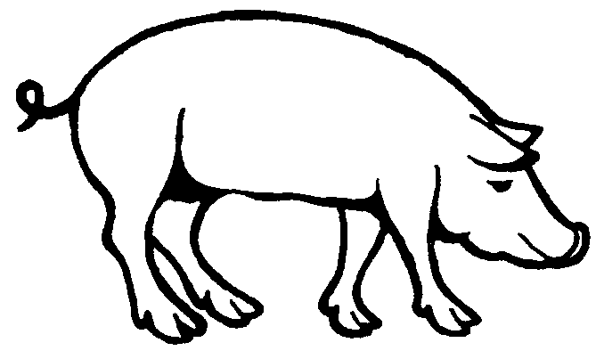
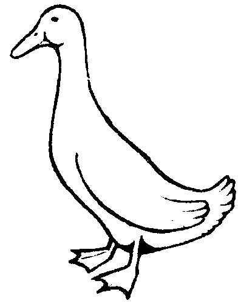
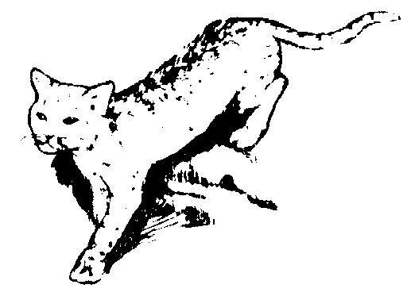
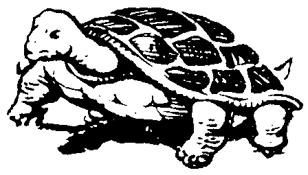

Piyak ka ngaran te anak te manuk.
Nati ka ngaran te anak te kudde.
Baketin ka ngaran te anak te babuy.
Pispis ka ngaran te anak te patuk.
Pispis degma ka ngaran te anak te miyew.
Bate ka ngaran te anak te etew.This page last updated: 03-Jan-2020
Copyright © 2009-2010, MALEI